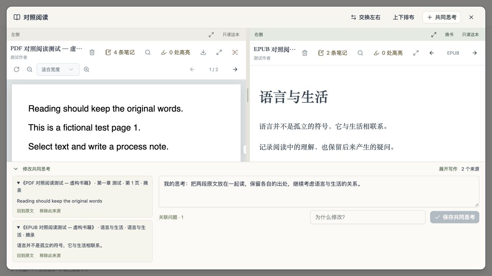

层次清楚的整张图
从核心问题到每一个子问题，沿着原有结构展开。点击板块，在独立窗口里继续思考。
一个本地的思考与阅读空间
读到的段落，偶然的联想，后来改变的判断。
围绕你自己的核心问题，慢慢找到它们的位置。
macOS · Windows · Android / 本地优先，首次使用写下自己的问题
上图为可交互的功能示意，使用虚构内容。安装后的资料库从你的问题开始。
01 / 思考的方式
问间的中心是你持续思考的问题。子问题保留层次，回答有自己的位置；跨越两个板块的联想，可以长成新的思考。
从核心问题到每一个子问题，沿着原有结构展开。点击板块，在独立窗口里继续思考。
选择两个或多个板块建立交叉思考，保留它连接的对象，之后还能继续添加子问题。
卡片可以是想法，也可以是尚未连接的问题；按类型和联系状态筛选。找到线索时，再连接到问题或移入问题图，保留原话和后来添加的理解。
02 / 阅读与笔记
划选一段原文，写下就地的过程笔记；也可以独立写读书思考。笔记按书籍与章节集合，还能连接到正在研究的问题。
电脑端 2.4.2 · 双书对照阅读
独立翻页、搜索和缩放。需要时放大其中一栏，或继续分别做笔记。
把左右摘录放进共同思考。书名、章节与原文位置各自保留，正文由你写。
共同思考只存一条记录，在相关书籍中都能找到，也能关联到问题与文稿。
03 / 从记录到成文
选入已经写下的笔记，自己调整顺序、补充和改写。原话与出处随段落保留，成文的逻辑由你决定。
可交互的流程示意 · 所有内容均为虚构示例，点击上方步骤查看
04 / 形成过程
一本书带来的想法、自己写下的判断、后来想到的回应，都保留各自的来源与时间。修改时记录为什么改变，重新阅读时还能回到当时。
我先把诚实理解为：说出的内容与事实相符。
也许还要追问：说话时，是否愿意面对自己的动机？
把表达与行动的问题放在一起看后，我意识到原来的理解还没有包括说话者自身。
留在手边的小工具
只记得一个词或一段想法时，从笔记正文、思考与文稿里找回记录。
电脑端连接本机 Zotero 资料，沿用文献分类；读书书架按文件夹整理 PDF 与 EPUB。
本机 OCR 帮助划选扫描页文字。批注可就地查看，摘录保存前可以校对。
使用问间无需注册问间账号。笔记、草稿与书籍首先保存在本机，离线也能阅读和记录。
坚果云用于多端同步；阿里云 OSS 可作为云端书库与备份。连接由你配置，平台支持以发行说明为准。
完整备份包含笔记、草稿与原书文件。也可导出只读副本交流，或导出带批注的 PDF。
桌面版 2.4.2
打开一本书，在阅读工具栏点击「对照阅读」，再选择另一本。PDF 与 EPUB 可以混合打开，也可以对照同一本书的不同位置。
分别写笔记，或把两侧摘录加入同一条思考。原话、书名、章节和位置保留，在相关书的笔记本中都能找到。
首次打开可连接坚果云，查看云端资料后恢复。遇到不同版本时，由你选择保留内容；整理旧云端历史前先完整备份。
想法与问题分开筛选，未连接的记录留在手边。整栏支持上下滚动，长草稿和小窗口中也能找到后面的卡片。
开始你的第一个问题
安装包是空白资料库。第一次打开，写下你自己的核心问题；已有资料可导入完整备份。
Mac 包未经过 Apple 公证，Windows 包没有商业代码签名，安装方式与验证范围见对应版本发行说明。升级前可导出完整备份；替换同名应用或覆盖安装，已有资料继续保留。
由你自己填写。它可以是你长期研究或持续思考的问题；之后可在核心问题设置中修改，并保留旧名称与修改原因。网页中的问题只是示例。
扫描版 PDF 可在本机自动 OCR，识别后划选文字、做过程笔记或读书笔记。识别可能有误，保存摘录前可以校对，原文件与页码位置继续保留。
先放进卡片集，保留你的原话。想到联系时，再把它连到问题中；卡片仍留在卡片集中，可以继续追加自己的思考。
这是问间的介绍页。页面里的互动仅用来演示功能，不会保存个人笔记；正式使用请下载本地应用。